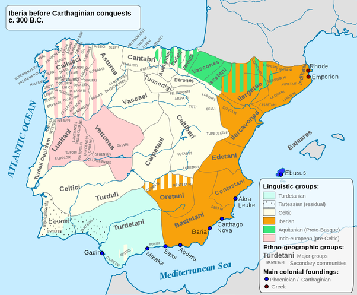
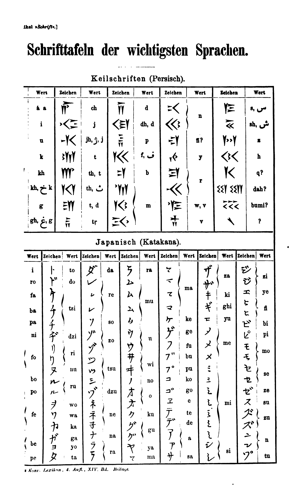
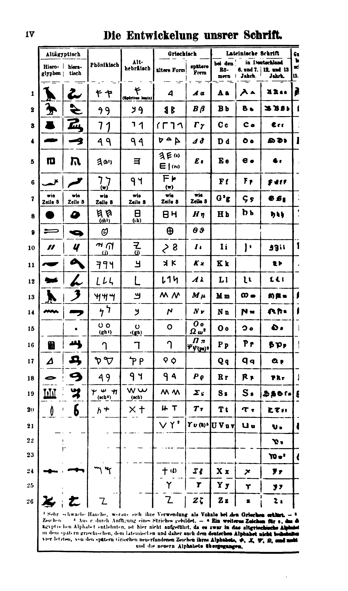
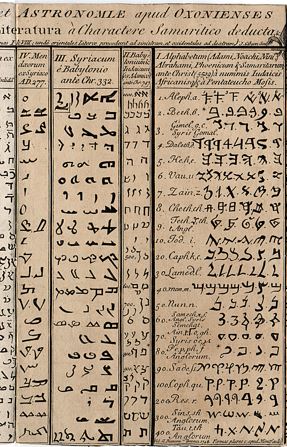

It can become volume Vl of the previous five: 0 1 2 3 4 5
but I thnk V is enough. V is Vinal. upd: don't forget, it is a draft, so it has more mistakes than books do)
from now on I'll work in my notebooks until I deliver something big enough
the preiveous volumes will probably be rehashed by topics when I finish my quest of dictionaries which can be understood not memorized.
ht oh I didn't know t is this littel. hijkl the claster with the longest letters. Three of them. Are tehy three mothers in this projection? hlk nu labial no labial
is h labial? I thought it was vowel. h is both labial and vowel.
Λabial is Vawial
UV!
IJ? j stands where labials are. but I want to use circular logic I think, explore this case
u y ij
hij
uv
yy
khijkl — l among i's
m is middle
n is new
no pq r/s tv
не покрась телик? хаха, хорошо что хаос не выстроился в апофению. спалился, хаус.
no is no, tv is tu, tu is ты and thee and thou and maybe even tho (though) but then thought too? thought could be thou ght where ght is related to ghost and co-gnito со-знаю
-to is a form of io, recognized in other languages as то (that) which is another of many examples of pronoun's reflexion (mirror changes left and right, so does this reflection to sides of the dialogue, разворачивает шахматную доску. т.е. не только лево-право, но и перед и зад (относительно полюсов (но не разворачивает ли она там полюса? ох как сложно, подумаю об этом как-нибудь потому (даже не в следующий раз)
I'ts funny how this volume writes itself, I had plan to close the project, but come on, it's what you ever wanted, but clicking the buttons damages my fingers.
There at 11:21 Adam Neely demonstrates how accents are about vowels.
(russian terms аканье и оканье also make it obvious; but this time it's in english)
here a couple of threads where somebody couldn't agree on that
https://www.fireden.net/sci/thread/11561546/ it's funny how I was the first to jump, but I wasn't op.
https://www.fireden.net/sci/thread/11600898/ of any of these
https://boards.4channel.org/sci/thread/11613560 but I participated in all three
and I think there was some youtube guru teaching foreign accents focusing solely on consonants and thus missing the point not being very good at foreign accents himself, even though he practiced not only what he preached, but unconsciously changing his vocalism to mimic the accent he didn't understood but somehow felt (or rather heard) but it probably was somewhere else, you'll find such examples yourself, because it being about vowels is still an unorthodox thought, even though it is correct.
those threads are where I found Adam Neely. great stuff.
a couple of other linguistic threads on the same resource:
these I didn't participate in:
https://yuki.la/sci/8987244
it's funny how predictable it is for being all chomsky chomsky schomsky schlomsky
PR works for sure, but in those upper threads we questioned for more than three times what is he so great about, nobody could reply, they just memorized his name the most, not even his ideas, thatnks gut

you may think it's a huge step back, a century back, but I just collect them all in one place thinking this alone will facilitate the further revelations. I could be right, I could be just psy0pt by количество переходящее в качество meme.
these tables are from Aryan Origins of Alphabet, the book expressing the abcd structure the most explicitly of them all:

so raw, yet they were so close, and even with knowing that magnificient sentence:
It was long ago noticed that in the Phœnician, Greek and Latin or Roman alphabets there is a repeated sequence of the letters as vowels, labials, gutturals and dentals. This sequence is well displayed by Professor Petrie, in arranging the letters on a square table like the old "Horn-book" board for teaching children their ABC.
It is interestign, that the son of professor Petrie worked in the field I mentioned before in the context of 231 gates: https://en.wikipedia.org/wiki/Petrie_polygon
внезапно:
Бафоме́т (лат. Baphometh, baffometi, окс. Bafometz) — имя сатанинского демона.
Впервые встречается в 1195 году в поэме трубадура Гаваудана как латинизированная форма имени «Мухаммед».
впрочем, есть и другие этимологии: https://vedaveta.livejournal.com/17603.html
забавно, что Алиестера Кроули ни там ни на вики не упомянают.
scientists (the true scientist, those who look for the truth) disrespect magicians as some retards or crooks. and they're correct about it most of the time. Some magicians are actually scientists, but level of scientific thought of Aliester was found by me rather law, and allow me to demonstrate why: he describes how he and his friend invoked some demon to help his friend go to India. And they thought the invocation failed, but rather soon his friend found an opportunity to go to India with some ship. It convinced Aliester that spirit doesn't have to show himself or herself or itself to oniself, themself, to magicians to grant their wish: maybe human sacrifices could make some spirit appear to try to make them stop: hindus say or buddhists say, I dont recognize usually who of them said what, that sufferings are self-inflicted by magi to make their wishes granted, but I think it grows from искусство требует жретв thing. жрецов? if I typoes жертв as жретв, то цре.. жрецов недалеко, вернее ещё ближе.
Я накурен как исследователю духов и положено быть, но я не уверен что я не копаюсь в своей голове сейчас, вернее в шее, ощущения идут от щеи, которую мы другом обрабатывали RSO в недостаточных количествах, что согласно одному исследованию может привести к распространению онкопроцессов, мы обрабатывали папилому, и я её пытаясь оторвать как резинкой запустил что-то от неё вовнутрь, я боюсь. Don't fuck with aliester, that's what they try to tell you. Whatever he did is not for everybody, the knowledge of sacrifices are not even in his book as far as I could see, some mentionings of that, yes, but don't I do the same? don't I mention this scary shit? This book is to be stoopeed right here and neer shown. Or this tabooed topic should resolve into as I caoll them plot-twist. Yes, we knw of all those deviations from healthy societal processes, btu
You knew people ate other people not only for survival, but often just for the hell of it: it didn't make you go and try it. Not yet, but not only because cops will get ya for that, they don't evin care sometimes: we have tens of thousands each ear missing so I heard. What meaning shifts could lead to ear reminding year: could it be crescent standing for a week, now standing for a month most of the time, even though a month is four different crescents: week = ухо? I don't know, but they're somewhat similar. I want my heat to held and body wiggled in amiotic liquid so my neck relaxes completely. But what if it will tear a muscle or two? how strongly or accurately are you supposed to wiggle your body and why. Just hold your head and let your body move freely. Now I just found a way of extracorporal stimulation of heart function by just rocking the capsule with embryonized man without placenta.
When placenta is on (or in) we have to work with placenta, just as woman probably pumps it with her lungs.
but I was speaking of cannibalism: I would be grossed out from eating most of the people, and to my surprise I notice that pretty women are preferrable: is it why cannibal societies are ugly like hell? children are also preferable, and not black child, they seem more dirty, but the whiter and prettier child is the more appealling it seem to be eaten (I know cannibals usually eat whoever they can get, but I know only few (from a tv) and only one of them ate hobos, others ate their younger girlfriend) Young are more pure, and that could be the reason (if this wishing hell can be called that) beyond pizzagate.
So white world is in some better hands, we try to have some good things and even though we (europeans) had our own autodaf***s and now it seems enemies opened the gates. Some jews seem to believe in their own myths and that is only natural that such jews want to take a revenge. Why did jews revolt? Because we didn't give them Jerusalem when we had it. We could expell all the arabs (and then we would be the bad guys) so we gave it to them to do the job, and oh they're doing. Arabs to arabia? What about palestinian arabs? They're palestinians? Some of them consider themselves palestinians and not arabs the same way I consider myself cyberian and not russian. Until Cyberia is in better hands, I will be considered russian by everyone around me. Even if Japan takes over (never gonna happen, not this far, we better don't blow this structure, because we'll have to fight for our right to be free from the fuckers of all sorts. Russian gangsters will openly take over and will become colonels and such, but military people are crazy. Do you think there are no crazies among gangsters? Who do I write it for? For myself first of all. Will I ever read it? When I have augmented intelligence and want to have a copy of 2020 me, I could you used (I was thinking of a form of could for the future it is here, and I unconsciously used you instead of u in used, so you is used for future? futurum it is, and will like this and у- [u-] as a russian prefix works to make a future form. You because imperative speaks about future? You'll do it = y'all do it. and here's a ling between will and all. use this слепок
But yea back to crowley and scientists: for them it would be classical apophenia and person building theories upon such a not only anecdotal, but outright weak evidence cannot be considered scientist. But are they right? The guy practiced magick successfully but isn't it all just magic? "spirits could be shouwn to ignorant audience in a smoke if a glass with a figurine of the spirit be placed before the only source of light in the dark room lighted only with the source of the smoke. And if the source is fire-less or fire is hidden, the impression could be incredibly bright. It's just my guess, I need to make an experiment to tell. Today public are more sofisticated and thus magic is placed under the k of knowledge of some abstract speculations and accidents are turned into miracles and some psychological element to it all is also present: imagine how bold is someone who overstepped the strongest taboos: a fighter tells me that your scream is different after you've beaten someone. Thanks for this forbidden knowledge, oh fighter, but I had to tell you off for some political reasons. We're related, so we'll see each other and renegotiate peace.
after you've beaten someone
after you're beaten by someone
just like s in
boy thinks
boys think
be or ve has to be there just once
have: beaten someone
are: beaten by someone
ha is are? it is in japanese.
and like russian -го is read like -во
japates -ha is read like -wa
- is optionary, orthography is arbitrary. so arbitrary that o can be a and visa versa:
 that small round of ⓐ wasn't even place dthere by
me, I found that image as is to respond to the guy who told me of
Bathomet's etymology, who would know that it will come so handy, I
only wanted to place this weird image here before, just somewhere
in between of today's session, which began at bathomet really,
because why would I be high online. nah nah nah nah nah. but I
thought of not turning this book into funny pictures collection,
it's random enough, no need to make this side of the story even
worse. and now, this.
that small round of ⓐ wasn't even place dthere by
me, I found that image as is to respond to the guy who told me of
Bathomet's etymology, who would know that it will come so handy, I
only wanted to place this weird image here before, just somewhere
in between of today's session, which began at bathomet really,
because why would I be high online. nah nah nah nah nah. but I
thought of not turning this book into funny pictures collection,
it's random enough, no need to make this side of the story even
worse. and now, this.A lighting in the rainless midnight sky at my right when I layed perpendicularly to my balcony across it on a table, and I said Ave. What are you saying? hm... Abe, отче. Ave maria is Father Maria thus? Was this meme completely ignorant? Father Mather it could be. If it's prechristian, Maria is mother, not only the name. Gratia Plena.
A M G is a good start. Domine Tecum, Ich keine.. Ich weiß es nicht (non lo so)
Ave Maria Gracia Domine? Could it be the order and plena was introduced for the melody?
or for the meaning, for Maria not being Domine.
I think I just reinvented крёстное знамение: прикоснувшись пальцами ко лбу, к сердцу, к левому плечу, правому плечу (плечо потому что на нём плачат? но когда крестился, думал о том что это руки) и заметил, что сделал это левой рукой, но столько органично это вышло, как никогда не уыбыло у меня. лёжа на пмяхком полу сделал это, вес был на правой руке чуть больше, но ведь и раньше заметил, что левая рука у сердца, зачем бы надевали кольцо на левую руку, если не была она священней, правая с разумом, левая с сердцем. Православные прямо в названии объявляют свою особенность орто-доксы орто скорей всего тоже of right словно до них делали по другому, и это сочетается с тем, что византийская империя, хоть и держала звание Рима дольше, "и тем трудней чем дольше" – это от недостатка фантазии у них же, всё за старое цеплялись. К тому что если эта христианская магия работает, то в странах под предводительством протестантов оно работает лучше всего, знать они правильно молятся. У католиков чуть похуже (папа и вся эта пиздабратия коррупционная, всё о власти миркой пекутся при том что мир во власти сатаны и кто они держащие власть в этом мире) у православных вообще всё швах. хуже только у муслимов, у которых где-то вровень с коммунистами, в Афганистане были и те и другие, разница не знаю, может им заметней чем со стороны. Если кто думает, что это вопрос дискуссионный, люди голосуют ногами однозначно в сторону протестантско-католических стран. Причины объяснять на этих страницах смысла нет: те кто не видят сами не читают подобные текста.
Left hand being more magical could explain muslimic tradition of not raising left hand: you have to greet friends with your right hand, keep the left hand for yourself: in islam you're supposed to wipe your arse with it. They take magic more seriously, they're more archaic (in reflection of Byzantine, but they're even further in the past) Sun comes every day, seasons come every year, to count longer periods, it seems natural to refer to some event as the reign of some king, as the event the most of laws depend on. As they did before mochamad in russian mocha is urine, that is where they immediately fail with russic nations, even though it's not obvious even to russic nations themselves, because they call mochammed mohamed (not ch, h, the same way englishmen pronounce it. Could english orthography be the bant working via russian?
But I came here to ask Could islam be made what it is today by english intelligence of Lourence for what you cannot stop lead. You cannot leave process in the neighbouring countries go by itself. Who know where it can lead them. May them work in accordance to our goals. The common goals, let us be the deciders of the fates. Who we? Those who speak english. But we all think differently and we all lead different ways. So be it, we have the advantage before those who don't: we have access to tens more of information they do. It gives unearned advantage to common public of brittich commonwealth. Just as latin gave such advantage to italians. Let's see how brits lead this world better than romani ever could. Gipsies pretend to be of both, Rome and Aegyptos. Big deal, евреи are of europe. Where are you from? I'm from here, there, everywhere.
Now I act as an asshole giving them shit. I'm sorry, I will learn to behave when it's based not on fear, but on comprehension of the etiquette.
гром не грянет мужи не перекрестится
это может быть формулой креститься при виде молнии.
будут еперь всегда это делать, но левойрукой. посмотри мчто из этого вырастит. пока левая рука доп. буквы назымает это правайя исполнила (левая крука сказала й, нот not я)
Про троеперстие это бредятина конечно, но прикольная, но бредятина, не лучше того что эзотерики исполняют. местами у меня наука, но чуть не половина (но меньше всё же, гораздо меньш) бредятина и оффтопик. оффтоп на странице приводит к тому, что она убирается с вершины стопки?
Сижу на балконе и крещусь на каждую молнию, стал суеверным. своеверным.
Слово суеверный = своеверный демонстрирует соотношения в котором находятся U & V:
У(U) = Во(Vo)
т.е. это в любом случае слоговая (глосовая) буква (глоссы = гласные? гласная дложно было в предыдущих скобках быть, но подсознанию надсознанию бессознанию виднее) бес is an abstract notion of bu- no u-(un- um-) i(il- ir- im - in-) a- all vowels seem to be no in inglish.
glish as glosses? голос?
(english is in-language? inside language? how did it happen that in- has these to different meanings, and в is showing it when it's v and в[v] is in in russian.
and n is also of the same form when it is in gree: ν
При очередной молнии почувствовал её аж в пальцах левой ноги, пошёл поклониться: открыв дверъ на моблокон балкон начал креститься и кланяться не разгибаясь, а сгибаясь всё ниже и ниже к груди, заметил что вывожу восьмёрку меж левым верхним и правым нижним углами.
начал сйчас тож делать правой рукой, но почувствовал что эта рука мутит, повторил пару восьёмрок левой и пришлё писать сюда, поюду снова помолюсь молнияюм
Удивился, что диавол в душе моей не возбухает, ведь я христианское в сущности богослужение совешаю, какое-то "еретическое" "герометическое" богуслужение совершаю. Но не сатанински ли я его совершаю, крестя себя правой рукой? хотел сказать левой рукой, но мопохоже что правою и впрямь сататниское, сетат state, senate, all are satans? if this world in the hands of the devil, they're and in christian faith it so is.
Похоже что я нашёл ритуал, устраивающий обе стороны классически символически представленные представителями якобы сидящими на моих плечах (понятно что это абстрактные понятия, которые раскидали по локосами, чтоб они не висели в воздухе забываясь массами тупорылыми) и я крестил же не титьки (хотя заметил в процессе что так делаю, исправившись заметил:) а плечи, и особенно если голова склонена, я увидел что вывожу кресты наподобие тех, что дирижёры обучены выводить:


Searching for these images I saw that there are different ways to do it, and the one I read in some book in dutch was more stretched left to right along a symmetic cross with long horisontal line and short vertical line. Didn't even find it, lol, it was similar to the second one. only the line 2 to 3 was straighter. and probably went in another direction (probably that I remember wrong) something similar to the top central one in this one, something in between it was, nevermind, why don't I weed this lyrics out!
означает это что дирижёр изначально музыкантов благословлял? музыкальная традиция определённо прошла через христианскую школу, однозначно это христианские влияния.
но кресты же не христиане изобрели? но едва ли поставить крест на ком-то было чем-то хорошим до них. crossed cursed? анафеме христиане склонны предавать.
I told before that axioms can be proven from their definitions (so definitions are new axioms) and recently somebody at 4chan has proven that parallel lines don't cross: somethin like x + 3 = x - 5 by building the graphs for y = x + 3 and y = x - 5 to demonstrate that they'rre parallel and this algebraic representation translates that axiom into a more simple unequality of different numbers (numbers that are at some non-zero distance from each other)
and this difference has something to do with music theory, notes in the chord are at some distance from one another. Pythagoras worked with both music and math, and probably some mythes are invented by him, who knows. Muthic. Muzh, probably mistransliterated as Vir.
v reminds ν which is n which is next to the m and probably it's cognate.
i reminds ו which is у, u, oo ii ?
positionally it is v or even f (v is read as f in german) because it's f in latin. and F (or W?) was in greek so they say, I don't remember this.
neglet ~ не глядя

ת in the group of אמש (in the form of the conductor's cross) supports the hypothesis that אמת is the three. Or is אמשת the four? Google's translator recognizes this four as "last night" in hebrew and as "person" in yiddish.
That image is from sefer Yetzirah and I still didn't read it, can you believe it! Too much weed to read.
Today I found a book from a guy I follow at academia.edu where he speaks that ogham is ancient. It is of 12 years ago, could it influence my "and ogham is the origin of it"? because I saw that coin before and cannot find it anywhere else.
https://www.academia.edu/4134903/Proto-Ogham is the link
there he massively resonates with my revelations: "Hibernian" he uses make me think of Iberian (hibernian is irish) Irish lore-ish? nah, too baseless yet. and he follows delivering with Celtiberian scripts. He only places it next to the term Coelbrenni which leads to some forgers of runes (and I will probably demonstrate their pre-Tolkien infusions into body of runic scripts but not today) and another new word is glozelian, but so far it only lead me to some obscure research I copied a couple of images from (they're clickable to that page)


Some enormous ammounts of literature about writing systems there are it may take me forever, but I must have all the time in the world, once I develop my capsule for living in artificial amniotic fluid.
But don't I know that each year every field produces more new knowledge than a specialist would be able to read in a hundred years? And this is probably the first example of information singularity, for they say future is already here, it's only not equally distributed. As it should.
Now it's time to do something I had to make in vol.1: Compare those paleohispanic scripts together with celtiberian, the most widely used form of them all.
Smaller forms in black in the right bottom corners of some iberian are taken from ancientscripts.com which is currently down oh why didn't I use teleport pro or something of the kind to mirror all that site for moments like this, gush!
As you can see, the researchers disagree on which form is voiced and which is voiceless and which form is stroked and which is not, though I don't know the difference between them either. And as for that voiced and voiceless thing, I'd go with additional stroke making it stronger, voiced, because that is how G is different from C, and this very feature make paleohispanic scripts related to runes (if the common forms were not enough) and runes have the same confusion: ᚴ is ofteh attributed to G, which makes sens, because it looks pretty much like Г (but Г stands at the position of C) and ᚵ is often considered to be K (which also makes sense, because K is different from ᚴ by being one stroke bigger, but I made it the other way around (probably being in the wrong, who knows - write me if you do) because I didn't see the dot on neither of ᚴ's of bornholm alphabetic stone (probably because it was marked by paint) so I allowed myself to feel free to make it my way. Time will show, maybe it will show that this disagreement is ancient and dialectal, because both C & G used to be the same letter.
also something wicked is in the term I never saw before:
Hesperia, ancient Greek name for the Italian Peninsula
Hesperia, ancient Roman name for the Iberian Peninsula
As if the Hisperian nation used to control Italian peninsula, but was forced to leave it for the Western territories. But it's just a guess, based on these two lines from wiki. ce n'est pas sérieux, mais c'est moi.
and a more simple form of Iberian scripts:
Northern Iberian script:

Southern Iberian script:

and of course I am clueless about how reliable these transliterations are. Remember futhark? heh.
This paleohispanic script has more archaic features than greek, thus greek historians distorted reality for political reasons. It's more archaic before we can recognize much more of archaic greek, thus greek is more modern, latin is actually modern for past 2000 years or so. So it's some roman летоисчесление.
I will try to retransliterate paleohispanic the same way I did with futhark. I yet have to try to read runic text in retransliterated futhark. f for a, just as in Hesperian. הSpearian?
everything will be fire
image with this was to appear here, but I though what about the copyrighted images? I have plenty already probably (even though I took it from the common internet) so why do I care? Because I will h
Я сейчас повторял свою мысль которую подумал о копирайте, но я останавливаю этим ход мысли, чтоб записать старую мысль, я мог бы дойти гораздо дальше если бы не парился графоманией. Законы о копирайте - законы заради жадных людей (для радости жадин, жыд) в то время как кто-то здесь посвящает всю свою жизнь общей пользе, продвижению науки. Зачем нам палеография? Человечество хочет всё знать, хотя бы за этим. Но и затем чтоб понимать языки, а не зубрить их. В том смысле что законы о копирайте нужно пересмотреть, а пока пересматриваем - отменить, потому что от них больше вреда чем пользы (но кому-то очень много пользы, постоянный интерес с неплохими доходми и несуществующей ответственностью, нет законов против того чтоб так закон начальственно вертеть. И я позволяю себе вертануть его со страниц этого необычного издания. Я его отменяю, создаю общественное мнение, под которые законåм принято подстраиваться. Но вернёмся к испанскому письму, На которое может испанский язык перейдёт как на руны переходят язычники севера.
Язычники без губных? Без М какой-то палевоиспансий.
There seem to be no unicode for paleohispanic yet, so I use similar letters explaining when needed:
А Р R D all these å-liny can be read in hisparic P (officially transliterated as A)
E looks like both o and ه) ه is at position of e alright, but it's a in tifinagh, and it's similar to e...
gosh, my head boyl, don't touch forms you don't recognize, just notice that the giants on whose shoulders I stand (the kids who discovered all those scripts) recognize them as forms I recognize. I recognized it as o, but if it's really e (they read some texts) then ه
E in northern Iberia is closer to the one we all know. So ه is in accord with tifinagh ⴰ which s porobably not a but э? First in Africa, second in Europe.
Tifinagh has ⴰ [A] (for africa?) first, and second is ⵓ [U], and here it is together with ogham.
amazigh tifinagh & ogham
E is a stroked through U: ⴻ (notice how much ⴻ reminds E) notice = see. notice and edit.
big A is R: big ⴰ is ⵔ
ⴰⴱⴲⴳⴴⴵ абвггг - почти как в русском (в греческом такого нет) русское Ж оно и ᚼ и ⵣ. и ⴴ?
Тифинаг идёт в алфавитном порядке, собирая все инфарианты букв в строку:
ⴰ ⴱⴲ ⴳ ⴴ ⴵ ⴶ ⴷ ⴸ ⴹ ⴺ
а б в г гж г гж д дз д дз (всё это очень приблизительно, используйте аудио-букварь)
ⴻ ⴼ ⴽ ⴾ ⴿ ⵀ ⵁ ⵂ ⵃ both F (in the form of H) and Fita (this time not tet but het, as in japanese)
е f k k kh h/b h h h and H ends this line as in latin, same tradition, this tradition is odder, older.
ⵄ ⵅ ⵆ ⵇ ⵈ
i kh kh q q
ⵉⵊⵋⵌⵍ ⵎ ⵏ ⵐ ⵑ
i j j z l m n ɲ ŋ
ⵒ ⵓ ⵔ ⵕ ⵖ ⵗ ⵘ ⵙⵚ ⵛ ⵜ ⵝ ⵞⵟ
p oo(u) r ṛ(rˤ) ɣ ɣ ɣ(ʒ) s sˤ ʃ t t(θ̠) ч tˤ
ⵠⵡ ⵢ ⵣⵤ ⵥ
v w j(y) z z ẓ(dz(zˤ))
ⵦ ⵧ ⵯ ⵰ ⵿
e o w separator joiner
this tradition is not necessary more ancient, because it doesn't have as many archaic features as paleohispanic (which not only demonstrates many long obsolete forms, some half-mythical forms like M being san, I finally found it, I found this san, it could be in some semitic, as they make me think, but I met it here, in Celtiberian, and I still think it could be mistransliterated: какая ещё матерь шматерь шатер твой матерь, страшно? а ты думал. материя скатерть. молоко халава. миска сиска. мочь can may can? son can. doщь немощь. мощь мощины мосцины мысцы мышцы мясцы. y is both ю and az
az, Z is Я. яЗык, яЗвук, яЗнак,
this tradition is not more ancient, it's the same period as greek and latin, Berberians fought Romans, not nations before them, yet before them they occupied Iberia:

ⴰⴱⴲⴳⴴⴵⴶⴷⴸⴹⴺⴻⴼⴽⴾⴿⵀⵁⵂⵃⵄⵅⵆⵇⵈⵉⵊⵋⵌⵍⵎⵏⵐⵑⵒⵓⵔⵕⵖⵗⵘⵙⵚⵛⵜⵝⵞⵟⵠⵡⵢⵣⵤⵥⵦⵧ⵰ ⵿ ⵯ
If this order is correct (for it could be a mistake of some professor who placed ⵒ before ⵓ, but if it's authentic, then it is one of the most mutilated alphabets I know so far (not as much as armenian, but even more than russian)
So to be sure, I began looking for such canon in some images, not just wiki. The most similar I found is more simple, but repeats that larger sequence:

ⴰ ⴱ ⴳ ⴳⵯ ⴷ ⴹ
a b g gw d d
ⴻ ⴼ ⴽ ⴽⵯ ⵀ ⵃ
е f k kw h/b h
ⵄ ⵅ ⵇ
i kh q
ⵉⵊ ⵍ ⵎ ⵏ
i j l m n
ⵓ ⵔ ⵕ ⵖ ⵙⵚ ⵛ ⵜ ⵟ ⵡ
u r ṛ(rˤ) ɣ s sˤ ʃ t tˤ w
No labial before vowel this time. The last line follows the last line of bornholm alphabet in a way. In the way of R (some would say ᚱᛣ is double R too, but that's not for sure: ⵖ the ɣ is more likely to be the cognate of ᛣ) and then three S's reflect ᛋ, two T's reflect ᛏ and W to reflect ᚢ
Whatever is the story beyond R instead of P, it is now less peculiar, because two writing systems go this way, and Tifinagh tradition probably never broke, so it can be the better source for the discovery.
But I really have to focus on my immortality capsule or I am going to die преждевременно.
Here I compre "Greco-Iberian" to other Iberian scripts, and I found it to be not Iberian at all:

Surprisingly, it seems only Δ and Λ have exact match, the next similar is Α
which makes Α Δ Λ the basis, which make me suspect that Δ used to be instead of B, which would explain the similarity of b & d and deda for mama in georgian. But let's keep on watching it, it's too early to make such conclusions. It easily can be something else. Γ/K have forms even more similar than A, thus it's Α Δ Γ Λ, a form of S similar to ᛋ and maybe N which could be a form of ᛋ herself. especially because some S's look like M which is confused with N all the time (here western celtiberian M is N in other iberians, I spoke about m/n invariance before and I will collect it when I sort these drafts out. мы/нас, nos, us, in/im,
d g l s are al similar to c. could a be a form of c too? if d is staved c, than a is staved c too, or a double c
could it be A in the form of V or Λ because it was just vowel, and ᚲ or < for consonant and согласная?
Λ and V for up and down (higher and lower)
< and > for more or less? In the force or in the direction of the flow?
К is "to" in russian S is "off" (ot in russian) as two forms of C (ᛃ)
The three Fates created the first five vowels of the alphabet and the letters B and T. It is said that Palamedes, son of Nauplius invented the remaining eleven consonants. Then Hermes reduced these sounds to characters, showing wedge shapes because cranes fly in wedge formation and then carried the system from Greece to Egypt*. This was the Pelasgian alphabet, which Cadmus had later brought to Boeotia, then Evander of Arcadia, a Pelasgian, introduced into Italy, where his mother, Carmenta, formed the familiar fifteen characters of the Latin alphabet. Other consonants have since been added to the Greek alphabet. Alpha was the first of eighteen letters, because alphe means honor, and alphainein is to invent.[9]
I trust Hyginus' account the most, because it describes the structure of the alphabet, thus he knows more, and he keeps on in consistency to what I found: palamedes invented both, 11 (additional to 7) letters and dice at the same time, and 18 is divided into three dice perfectly. And only then have Hermes simplified images to symbols of letters, and Cadmus, only after that system got to Egypt, brought it to Beotia, where his mother (who probably knew that one slot was to be empty, for pre-Palamedian dice could be blue for B & red for T and only count vowels. That would correspond with knucklebones having on.y four numbers and cubic dice could become necessary when additional letter appeared. 15 is also a very interesting number, because if there are 5 vowels, it gives 3 forms of syllables or three matters of alphabet: whether ABC, vowel labial lingual; or BCD, labial velar coronal of paleohispanic syllabary.
is it anohter reason of whay a reminds d so much?
But I return to all that just to introduce Pelasgian Alphabet: I thought it was unknown, but this image from who knows where (I made it clickable but it doesn't lead far) tells some alphabet similar to Etrurian (sc = R?) is exactly Pelasgian, who knows..
Is it from some ancient book where phoenician looked like something completely different from what it looks like in between 20th and 21th centuries? (it's 2020 to be precise) and where is this page even from? Is it just some freakery? Is the author of it just ignorant. Very unlikely. I have asked the question, I will look into phoenician writings when I... aye aye aye
To my surprise I accidentally placed different ammount of consonants around the third vowel, but it's just okay, because of doubling of z in that vowel's line tells that that someone's mistake just neutralizes mine. But even though I'm not sure if this axial symmetry is even a thing (because I still never read about it, never met a writ, a word about it) and the doubling of ᚴ as ᚵ (even though I didn't see that dot on that artefact) didn't confuse me. But now it makes me think: doesn't this doubling allow ᚢ to be U and not V (as my axial symmetry tells) eh? and it does, but such axial symmetry still looks kinda wrong, so I'd better discard that hypothesis of its ever being known completely so I just discarded that modified image instead.
But the question of sabaean remains. I never researched it properly, I maybe will.
But I've been wrong again: that alphabet is right to left, thus the letter from the axial-y-line (axial-i-line to be precise) it's not y, it's i (it's shortened probably due to arabic influence. Did arabs preserved phonetic values of vowels? They pronounce vowels very well, their nashids are
So the only way to lay sabaean into axial is by removing one of z's and it will be still not that pretty:
(chances of that was 50% so not that impressive, or was it 100%? for otherwise I wouldn't cut off 𐩼)

𐩠 𐩡 𐩢 𐩣 𐩤 𐩥 𐩦 𐩧 𐩨 𐩩 𐩪 𐩫 𐩬 𐩭 𐩮 𐩯 𐩰 𐩱 𐩲 𐩳 𐩴 𐩵 𐩶 𐩷 𐩸 𐩹 𐩺 𐩻 𐩼 𐩽 𐩾 𐩿
It is halaham! but let's arrange this mess by order:
I didn't know where to place 𐩼 so I found another source of information, and it surprised:
𐩱 𐩨 𐩴 𐩵 𐩹 𐩠 𐩥 𐩸 𐩢 𐩭 𐩷 𐩼 𐩺 𐩫 𐩡 𐩣 𐩬 𐩪 𐩲 𐩶 𐩰 𐩮 𐩳 𐩤 𐩧 𐩦 𐩩 𐩻 (𐩯 𐩽 𐩾 𐩿)
but let's combine it as the previous image did:
(𐩳 𐩽 𐩾 𐩿) 𐩱 𐩨 𐩴 𐩵 𐩠 𐩭 𐩥 𐩸 𐩢 𐩷 𐩺 𐩫 𐩡 𐩣 𐩹 𐩬 𐩼 𐩪 𐩦 𐩯 𐩼 𐩲 𐩰 𐩮 𐩤 𐩧 𐩻 𐩶 𐩩
(it places 𐩹 at the fifth position, where in the previously found order it is at 15th.)
So I challenge both the abecedaries: they're further from grace then the modern counterparts of them:
in comparative chart some g is between o & p,
and in previous chart o & p together but kh is between e & f.
Was it some creativity of archeologists or some sobaean mashtots-like reformer? I doubt it, priests in that period had to know the structures.
and now it's more obvious what is halaham:
𐩠 𐩡 𐩢 𐩣 𐩤 𐩥 𐩦 𐩧 𐩨 𐩩 𐩪 𐩫 𐩬 𐩭 𐩮 𐩯 𐩰 𐩱 𐩲 𐩳 𐩴 𐩵 𐩶 𐩷 𐩸 𐩹 𐩺 𐩻 𐩼 𐩽 𐩾 𐩿
Comparison to the alphabetic order allows me to colour halaham and it becomes obvious, that it's some prayer, because it is: הלחמ and I thought it was Elohim, but google's dictionary tells it's Bread. And it correlates with Jesus calling bread his godly flesh. Хлеб всему голова? В начале хлеб родил небо и землю (хляби? манна небесная?)
God is אלוהים.

I don't recognize this order or if it is an order at all (it's clickable, so figure it out by yourself)
another sabaean abecedary independently came to me from Hans Richter when we discussed ugaritic:

some doubts had I about hieratic, so I looked other sources and they said "maybe"


And in that letter about ugaritic these images from “The Story of Writing” by Andrew Robinson:

But I'm still sceptical about those additional ugaritic letters, and I'm gonna be sceptical until I see the actual artefact from which that copy is alegedly made.
That guy is my great friend now, technically penpal, but pal nevertheless.
He asks me if I read Die Ssabier und der Ssabismus by Danīil Avraamovich Khvolʹson and I haven't even heard about that man, so I sent him this text which can be an interesting chapter of this book, so I don't have to repeat what I told him about what I discovered as I wrote the letter actually:
I haven't even heard about that scientist, and unfortunately I still don't read German, but I will check the pictures.
I was looking into Sabaean yesterday, and comparing halaham canon to abecedaries, I got a guess that the canon could be some prayer (or a spell) because the first h is transliterated as ה which position is that of E:
𐩠 𐩡 𐩢 𐩣 𐩤 𐩥 𐩦 𐩧 𐩨 𐩩 𐩪 𐩫 𐩬 𐩭 𐩮 𐩯 𐩰 𐩱 𐩲 𐩳 𐩴 𐩵 𐩶 𐩷 𐩸 𐩹 𐩺 𐩻 𐩼 𐩽 𐩾 𐩿
𐩱 𐩨 𐩴 𐩵 𐩹 𐩠 𐩥 𐩸 𐩢 𐩭 𐩷 𐩼 𐩺 𐩫 𐩡 𐩣 𐩬 𐩪 𐩲 𐩶 𐩰 𐩮 𐩳 𐩤 𐩧 𐩦 𐩩 𐩻 (𐩯 𐩽 𐩾 𐩿)
(𐩳 𐩽 𐩾 𐩿) 𐩱 𐩨 𐩴 𐩵 𐩠 𐩭 𐩥 𐩸 𐩢 𐩷 𐩺 𐩫 𐩡 𐩣 𐩹 𐩬 𐩼 𐩪 𐩦 𐩯 𐩼 𐩲 𐩰 𐩮 𐩤 𐩧 𐩻 𐩶 𐩩
but only Elohim is אלוהים and הלחם is "the bread" (which makes me think about Jesus calling bread his divine flesh, and there's a proverb in Russian "хлеб всему голова" (bread is head to everything) and heavenly abyss is named хляби (hlyabi) in old-russian (native russian speakers usually hardly know what it means (they (just as me) would only say that it's a sky, but if we only know it in the context of "хляби небесные" then it's heavenly sky. or if that is what opened up before the Deluge, could people think of clouds as of bread? the most similar word to hlyabi is хлеб [hleb] (bread, hlaef) and manna is thought of as semolina (манна & манная каша & манка) it all could be just nothing and volk-etimologie, but https://classes.ru/all-russian/russian-dictionary-Vasmer-term-15007.htm also doesn't really know where that word comes from, but gives an old form (literally хлеб) and for whatever reason connects it to Middle High German slamp (they translate it as feast) and Dutch slemp (which they translate as "tasty food") and another meaning of word хляби is liquid filth, which could be linked to batter and porridge (kasha)
Since you like looking for god's names in abecedaries, I felt like sharing this.
also the final letters of Ugaritic alphabet can be read as Tius (but I'm sure about it even less than about that the-lehem, because lehem for hemel looks very likely if saying that moon is made of cheese is of ancient origin. Ancient people could get lsd-trips from time to time because of ergot, and bread again being white next to black ergot growing like a snake out of ear(oor) I wonder why you call it so, in russian we destinguish colos from colossus but it's close to spike, not ear or is it as a rabbit's ear?) that could be real good and evil tree because some powerful evil it could cause: gangrene because of vessels spasm. And wish to grow ergot for sorcery could be a reason for witchhunt whence "spoiling the crop" would be not such a baseless occusation. War on drugs is the continuation of the witch-hunt.)
Take your time.
---
okay, the letter ended there. no have a nice day or all the best, I'm such a хам cad lout twerp tyke tike mucker and a very rude you man I wanted to write young, but my fingers disobeyed to that lie. 45 is new 25 isn't it? with all the technologies I have more time than before. Отказ от тяжёлой работы и алкоголя творит чудеса как сказал кто-то, я добавлю что женщин тоже надо избегать (у меня седые волосы полезли когда позволил женщине остаться когда хотел выгнать (дважды) но дал три попытки зачем-то) но я аутист, может это правило менее важно.
I have to stop smoking weed and I will figure out how to make something big since I don't work in language when I am not high. I write down some occasional findings, but they're not work, they're 20 times less intensive.
---
I wanted to show you ergot but you check it out yourself. It's rather scary.
(and I went offline to start book on magic, explaining superstitions with actual reasons beyond the hund: imagine in today world if gipsy witches taught your children smoke weed and drink witchy wine)
The specific sign 𐩪 is S in Sabaean, and ⵄ is I in Tifinagh. (a sign similar to I was used for Z long ago)
a couple of similar signs are vowel in Sabaean: 𐩱 & 𐩠 are E & A
Okay, this one is still raw, but If you only knew what have found in my notebook tonight!
It's in london copybook (the serie after american public transport serie which was after fish serie)
Voiced Sonor Voiceless as three mothers (in russian Voiceless is just deaf, and that is the old mother)
ABGD (because they say that C was voiced when C and G was the same letter (some long ago))
IMLN (l is probably lingual click, imitating horse, because Ma is also horse, and No is Go for horse)
OPST (because Q is not met in the most of alphabets, because R is Р in russian, `cause ᚱ is probably П)
IMLN is probably IMKN (but then k is not sonor, and L is similar to Г like λ is similar to ג)
because If H is И then HIJKL is the same И claster, and LMN is IMN.
So that velar column is all freaky and uncertain, and it becomes much better if we only keep less ambiguous letters:
ABD
IMN (but if M =N, then IML, which pretty much contradicts what I just said about I = L, but if M = N then isn't N = И = H first because 'n' of and is и and second because N is Н in russian and И used to be written as H in old-russian)
OPT
ABD
ИMN
OPT
Just as sefer Yetzirah mentions only water of lips and fire of tongues (and air for vowels is not in the jewish text, only in translations. I'd say vowels are solids, as land in Африка, Ивропа, Остия
I thought I was India, because it promotes K in indian fashion.
E was Europe. But only when there was E. When there's only I it's Iberia or some other Europe.
Now I have no reason to think of O as of asian line, because who in the Ost passes labies first?
AMT is read by diagonal, the truth. AMS could also go by that diagonal, if S was the other silent, but before C appeared there could be no S, so I think. only Ш maybe& Ш & Ⰿ-like T of upside down Ш.
I only saw final Z, not final S, so I go with final T. The Truth (sefer yetzirah mentions that three mothers is a great mistery, so don't expect it to be too open.
After all there's no third element, only B & T, and AMT could be left to be figured out by someone who actually knows hebrew (I actually don't, but I still managed to figure it out because of how accessible thee extra-cortex of the internet-powered linguistic information. Language science, but linguistic for its adjective. I will reconquer linguistics from chomskians. Somebody deliver genetic therapies to that dnst3-tortured tribe!
И МНЕ.
𐎀 𐎁 𐎂 𐎃 𐎄 𐎅 𐎆 𐎇 𐎈 𐎉 𐎊 𐎋 𐎌 𐎍 𐎎 𐎏 𐎐 𐎑 𐎒 𐎓 𐎔 𐎕 𐎖 𐎗 𐎘 𐎙 𐎚 𐎛 𐎜 𐎝 𐎟
a word about halaham (the lehem, bread) is that if хляби is related to хлюпать, что может и к еде относится (хлюпают вкусной нямкой) и к грязи: а жидкая грязь также может быть названа bog, and bog (Б-г) is god (Г-д) in russian.
Is it related to the first scientist, Thales of Miletus, speaking of Water as the basis of everything?
historically recognized as the first individual in Western civilization known to have entertained and engaged in scientific philosophy.[3][4]
Maim is literally plural Ma (im is plural suffix, and though today it is only used for male words, I heard from my teacher that it was not always the case)
Шамаим огненная вода? а эрэц тогда закусь?
кровь и плоть? вино и хлеб?
жидкое и твёрдое, инь и ян, тёмное и светлое, холодное и тёплое, х & т? т как тётя, Ⰿ-like mama?
Ⰿ is glagolythic m, х как хер, her, but they say t was written this way, but could x be z? could x be h? could it's h-ness cause thought of vowel in the end (which was accepted in archaic rome, in runic alphabet, in greece, in russia — greece, russia and some scandinavian alphabets are those who follow this tradition. Others place new vowels next to their original forms, and semites even began beliving that they don't have vowels at all (or they're only teaching so)
But I don't know how your browser shows Ⰿ (because here in mine it is similar to Mc'Donald's logo, a large m, but the same unicode can be recognized as I learned it before unicode made the mess: four balls at the ends of K rotated 90 degrees clockwise. in the same style with other letters.
If I was a master knitter I would learnt to knit by wool but I don't have passion for нитьting.
sewing is also from chinese or/and japanese shi-ito (or only shi, 线)
A wiked manner of japanese to draw letters. Look a g, they know it's from c, a form of c
it is clickable, but procede on your own risk: it could be filmed directly from brains and cleaned by ai, either way it is a work of art, and it is potentially dangerous in some form, just my spooks (испуги, с пуками) at least it looks this way, a masterpiece
三つ編み mitsuami - косички (braids)
I thought mitsu is water and it is also three. Is it why mem is triple? 𓈖 three mothers is it them?
Klotho is the protein
No insecuity lines.
Some random linguistic images follow just because I sort my saved images again:


the random stopped here because I think I know what that tetrahedron can be.
A protodie:
I'e bbeen promising to put this project on hiatus for some time now, but I'm mouthful of thc-powered smoke again. So weed is a drug, because this habit controls my action stronger than intellect, or with the same power: it has to rationalize the smoking, so I have to work on the intellectual level to give up weed. How it rationalizes it today: I don't have anything else coming my way anyway (false!) and I haven't finished here yet (true!) the first one is referring to no arranged meetings for today, no even money to start building my apartment to motivate the investors to fund me further, and I spent the funds I kept for materials on weed instead. (true)
The lie's found. He has to look for new contracts as my mom told me about my brother who drinks (and it's also a druggie habit) I must look for new contracts. I must make science, not business.
This is the main argument. I don't want to work with my hands either (I use them to type, traumas are especially unwanted) I have to hire professionals, so we work from other sides of the professional spectres. arts and technologies.
I also should be shaman. So I will be bearded and hairy and high. I wear and bear hair. bear'd is haired.
Science is service. Business can be service too, but it's another kind of service, serving the clients, not the truth alone.
Is it weed still convincing me to keep on smoking it? Oh snake, the jesus, lucifer, prometheus.
Thank you for bringing light to that diy-pipe alright.
First I convinced me to work on this field instead of medicine because I thought I'm close to the break-through, after which they will recognize me and I can make contacts with truer biologists than myself.
It came out that academic public is fucking clueless and not even interested (they're not interesting them selves too) so I only met a couple of researchers on the field I'm currently in. Others remain clueless, but these two at least see the axial symmetry (one of them sees it more clearly, the other is more educated, but both of them are not professional linguists, just like I am also not by academic standarts: nobody pays me for my work but my Mäzen.
some more random images are coming your way.:




I will remove these four once(whence) I find a better scan.
random flow goes in series.

and the same in finer detail:



I keep on correspondance with Hans R. (aka Joannes Richter)
and he sends me Flinders Petrie's book The Formation Of The Alphabet, which I have downloaded over a month ago and never read and utterly forgot it so I asked him to send it to me.
Incredibly embarrassing. so I mirror here, and the paragraph he told me to pay attention to in the context of discussion we had. (a mirror for the booklet)
I sent a letter to J. Richter today, you may find it interestign too:
Why do you set apart L & R, when they're one above the other?
Do you know there are more than one form of R: russians (and maybe scottish too) pronounce it at the same position L is, only vibrating by the tip of the tongue, so their R (or Р, that's how russians draw it, their P is П, that's a greek thing) while brits (and maybe french too) pronounce it by uvula - you don't even have uvulars in your table.
Now, about that table: always count what was the chance of the position of the letter at that very spot: If you see how often labials follow vowels in english alphabet, you'll see that the answer is up to 80%, which does seem like a systemic (if you count Y in, it's 2/3 which is not that impressive, but still more than a half)
It doesn't make sense to count another colum, if only one letter in that column: it could have standed anywhere and you'd see the same system in that case: you'd just place that column somewhere else.
Recognize word apophenia and make your best to be sure that you're not following some false structures.
Those additional letters in ugaritic is probably what made me say in that up to 20 years old piece of draft that more ancient writing systems don't follow this structure as well as modern english latin: how can we even be sure that the ugaritic abecedary is authentic. It supports Vowel-Labial-Linguals order not worse than others: only M i not in its place. But all the other columns (the distinct velar-coronal in english latin - and only there! is it one of reasons (or consequences) that the commonwealth rules the world?) all the other columns are a mess of linguals (just as the myth tells: 5 vowels, b & t (neither K nor R, these are of later origin, together with h maybe, but the chronology of appearing of different letters is yet to be destinguished: no historic source will tell about: ugaritic abecedaries are on the verge of what is found and they're already complicated so much, that they're even further from the source-code than some alphabets used up-to-this day (maybe the final triliteral row is built upon canon and not expanded yet, that is what makes it even more interesting (together with runic alphabet stone from Bornholm, which preserved the first raw in the form of ᛆᛒᚦ, where ᚦ is both Г&D, or B is both b&c, which is less likely, but who knows, I know few reasons of why velars could be born not by linguals, but by labials: mama is kaka in japanese, not labials but velars are the first consonants in eastern alphabets and syllabaries, c is graphically not that far from ᛒ, japanese p,f,b are made by diacritizing h, russians pronounce suffix -го (go) as -во (vo)
But of course d has even more reasons to be the father: c is staveless d, ᚦ looks like г which looks like r, which is р in greek and russian, both are lingual - that is first of all, g is d in russian cursive,
so now, writing this letter, I realize once again, that both B & D are parents to C: C as in child, ko in japanese, -ъk in russian, Жили-Были Дед-да-Баба, родился у них Coloboc.
I used italic (almost cursive) and it's less of cursive than cursive: only few letters are cursive:
a & a, g & g, maybe v & v are the only ones redrawn, others are only inclined:
abcdefghijklmnopqrstuvwxyz
abcdefghijklmnopqrstuvwxyz
ABCDEFGHIJKLMNOPQRSTUVWXYZ
ABCDEFGHIJKLMNOPQRSTUVWXYZ
It's especially good I used italic here, beause the font I use in gmail has g like it is in italic:
g is d in russian cursive
g is d.. is not correct, this form is never used in russian. only
g, and with the swash too, is d in russian cursive. but
not italic: д is another form of russian д. both g
& д are d in russian (Дд) it is weird. it's almost as if
both forms are ᚦ. and Д is as if it' ᚦ rotated counterclockwise. I noticed before that d is Д rotated counterclockwise. And as clockwise is the lucky direction, russians (and greeks?) took it from the west (as we ajlmonst always do, to be honest) and runic nations took it from us. But if it's not a charm, but a curse from an opressor (force nation to draw deus-letters cotated more open.. is it more open? no, close is clockwise because it's lucky to keep tubes shut.
If reforms for whatever reason rotated letters counter-clockwise, did it open them? or was it some grammatic magic to oppress? either way, in this case russians took from normans and sent it to rome. Which is counter-intuitive, counter-historic, and why wouldn't grammarians of the nation (and neighbouring nations too, allies are always around) noticed that "one way is delight, the other is not, some naught" -- it's some ancient, magical, that I didn't even dare to leave here the original spelling of the spell, you can google it about 231 gates by yourself. I probably mentioned it openly before, but now I grew more sensitive to these matters.
symmetry
bd
pq
shows
equivalence of linguals (even velar and coronals can reflect
eachother as voiced and whispered forms)
minuscule
is kinda tabooed: they teach that it appeared only in middle
ages, forgetting to mention that they speek about greek
minuscule here. Roman Cursive is basically minuscule, and its
history is deep. Even the word cursive is scary.
But
modern cursive forms don't reflect eachother, b reflects g, p
reflects.. j maybe? I'm sorry I'm thinking while I write.
I am going to send these 7lines to my friend Hans, just archive it here for both legal and scientific reasons (some information in this text can be new, and thus it can have interest from the scientific pov.
so I procede:
One
russian guy (probably even from my own city) noticed that voiced
consonants are grouped in the beginning of the alphabet, while
voiceless ones are at the end of it (it only happens in russian
alphabet, afaik, but I was also told that C sounded like G when
the C & G wasn't divided - but it's still a hearsay for me,
I cannot read those ancient texts, I haven't even looked into
this corridor of this not-a-rabbit-hole)
абвгдеёжзийклмнопрстуфхцчшщъыьэюя
even though it's my simplification, he also noticed sonors between them:
абвгдеёжзийклмнопрстуфхцчшщъыьэюя
even though it's my simplification, he also noticed sonors between them:
абвгдеёжзийклмнопрстуфхцчшщъыьэюя
Both
B&T of the myth "The Three Fates or, some say, Io the sister
of Phoroneus, invented five vowels of the first alphabet, and
the consonants B and T" and this BDPQ-symmetry seem to confirm
the applicability of this principle.
this voiced-voiceless thing is so native to me, that I will not be surprised if it's one of my earlier revelations, I had something this big and then I just forgot it, I only remember that it was something big in the alphabet, and I don't remember noticing the rhyme of the lines until adolescence when I got something to do with военкомат. I know it sounds weird, but this guy lives in my city, what were the chances, but I will know of this only if I meet him and he admits that we learnt at the same school. If he's my age, it's whether I told him that or he told me this (is it possible? I don't remember anybody but me knowing of that what I noticed, otherwise I would at least think of asking whoever told me of that, and I also felt like feeling it, not really understanding, or I would probably put it down, would have drawn it. did I? I would never know. Probably not. So he also uses livejournal, he can be of my age, but if he's not, then whether some longer transmission happened or he did discover it himself. I do need to talk to that guy, he could be the fourth in the group of superheroes.
So I went to his journal and asked him this question:
Расскажи, пожалуйста, откуда узнал про звонкие-сонорные-глухие. Потому что это такое знакомое, словно в детстве знал, но это было столь велико и столь нечётко (К & П/Р) что просто выпало из головы. Спрашиваю потому что каковы шансы что мы оба из Челябинска? и не 1976 ли года рождения? к тому что может мы в одной школе учились или в одном кружке астрономии занимались. Я поместил ссылку на твой журнальчик (на ту стаью про звонкие-сонорные-глухие) в свой blogk aeiou.ru и эта тема становится одним из фундаментальных камней теории: мифические первогласные BT в таком порядке,
просто симметрия
bd
pq
в таком порядке, я её упростил до звонкие-глухие, но звонкие-сонорные-глухие могут быть триптихом "три матери" (общемировой похоже архетип, понятие tridevi хронологически раньше понятия trimurti, а до христианской троицы был культ трёх матерей (трёх материй?) Norns, Moriae, Fates (те самые, которые фигурируют в мифе "The Three Fates or, some say, Io the sister of Phoroneus, invented five vowels of the first alphabet, and the consonants B and T")
хорошо, что анонимные ответы здесь скрыты, ответить можно на woodeemann на gmail.com или https://vk.com/id58166550
---
(отчего-то я перестал злоупотреблять серыми оттенками. скорее всего потому что обленился. более стоупудовие я писать-то стопудово не стал)
It's funny how the line of the myth finds me before Robert Graves. Probably because I placed it in the beginning.
And it also finds XPBNGStm (what a pretty encoding of something even more precise than an url into one simple index. And that peruvian guy or a gal (I am a biased mucho, so I say a guy, a kid to be less precise, but that smells satanic already, don't disturb these deeper layers, it's not exactly sane)
and all of the sudden I learnt to read music, and so should you:
I made this screenshot and thought "Aleut"

so I saved it as aleut.
I don't usually think such sudden terms, and I thought I saw this word
So I thought I just saw this word on the page. But, to my surprise, the whole page omits word aleut. and nowhere on the screen it is. This is totally related term, how could that be, and that was the page I closed a minute before I closed the page, which is still weird, because I don't remember keeping it in mind, or knowing this term before, hearing perhaps, not knowing/
Why is it here? the fact that we are here in a draft doesn'tt mean we have to callect here raw meat. It does. there are two shifts to type with just one hand having middle and nameless fingers as an anchor/.
It's so good I have two hands!
Evans didn't invent it, he preserved it. Would church destroy or not allow it if it was heathan? Let's think nicely of him even in our arrogant guesses.
I spoke that if he invented, it, he'd make it similar to european in some sense, but sense in which it is similar to our alphabet is of such a nature that he probably didn't know about it, an some more obvious parallels are not seen, so whether he was of such a sorcerer-tier erudition even noone is in the internet aeon, and if he was then why is he not among the greatest, but some church clerk? Or whether it's the wisdom of history of writing itself showing us that aleut writing tradition. It is not aleut! Somehow it seems it's not aleut. wiki doesn't mention aleut, but it's still weird because it mentions several languages of that region, but not Aleut. Gosh, it doesn't even mention Eskimo, and all we the whites know is that there's only some eskimos in the middle of nowhere. Doesn't it mention aleut, because they don't want us to know of this nation, living among russia and usa and not giving a fuck about our... they have to give a fuck: they're not allowed to be one nation, Russians genocide nations. They're not allowed to visit their relatives, unless they get visa in vladivostok. than from petropavlovsk-kamchatsky they have to fly to that city across the border. So many gasoline burnts just to get a permition to some basal human right.
So, back to cannadian aboriginal syllabics. Why is it in plural? Are there more than one? So many nations use it. Why would they choose this clumsy and unpopular system if it wasn't their own? It is their own. Now let's notice the structural features, that witness how it is an ingenous, related to ogham, first of all in their vowels: Evans would probably make it in latin order, and here we see something very similar to oghamic order: aouei in ogham, aoie in the northernmost america. Shows a-o distinction more basic than AV, . And their long forms are just in deeper strokes. It is some completely new feature, european way of writing doesn't allow such distinction.
The bigger truth is there's no border between Europe and America. Ingenious people lived on those territories in such a large quantity, that they had many nations (Greenland is full with eyeliner fisheaters, danes are a minority in there, and some mad Icelandic king was expelled and lived in Greenland, from where he probably (I read of it in some historic article) setteled another colony to the West, and of course there they were never alone, if people can live there, they live there, at least as some secret place of their family, and invaders must die)
Evans letters are similar to devanagari sometimes, but I'm pretty sure that theory is even worse form of apophenia than some lowest parts of this book. (thanks gods for having the highest parts)
Devanagari vowels are in japanese order, also doubled with longis, so why wouldn't he add the stroke to make it double the way devanagari (and latin too) have? To be extravagant? Then he wouldn't work for the church (wouldn't that system crush his spirit long before giving him any position) of all the above I declare that Evans was a good and kind fellow, who so gracefully fooled the official idiots and villains that now we can know of Aboriginal syllabics of North America (they're also in Alaska and probably was used at soviet territories before they were occupied by russian orthodox church.
Hooray, I'm right:
James Evans (January 18, 1801 – November 23, 1846) was an English-Canadian Methodist missionary and amateur linguist. He is best remembered for his claim of the invention of the "phonemics" writing system for Ojibwe and Cree, which was later adapted to other languages such as Inuktitut. While it was long believed that Evans was the original inventor of the phonemics writing system, there is some evidence to suggest that the Cree people already knew the writing system[1] and Evans simply adapted it for print.
I think from now on for quoted text I will use italic instead of smaller font:
(as I wanted to do before)
this is from the link in that 1:
Those who favour the use of syllabics over roman may appreciate the research and insights of John Murdoch, who completed a Master of Education degree at the University of Manitoba in 1981. There are a lot of insights here far too valuable to be forgotten.
John wrote to Cree Literacy Network about it in 2017: “I researched the origins and evolution of syllabic characters for Cree, Inuit and Dene languages, producing a MEd thesis at the University of Manitoba in 1981. Although James Evans, the Wesleyan Methodist missionary played a part in the first printings in syllabics at Norway House, He was not the person who was the most instrumental in the writing systems conception and spread. During my research I visited archives as well as Aboriginal communities in the Boreal Forest as well as the Eastern Arctic. Missionaries George Barnley, John Horden, Jean-Nicolas Laverlochère, Edmund Peck and Jean Baptiste Thibeault all arrived to Cree, Inuit and Dene nations who were already able to read and write in the system. A more complete history can be found in my 1981 thesis, Syllabics A Successful Educational Innovation.”
First, a link to the electronic theses and disserations collection of the University of Manitoba’s Faculty of Graduate Studies:
John Murdoch, 1981. Syllabics: A Successful Educational Innovation.
Downloadable pdf:
Murdoch_Syllabics_ (4) (mirror)
Probably this is the guy:
John E. Murdoch (1927–2010), an American academic in the field of historical science
So how did I know that? I know their tricks:
they claim that Mashtotz created georgian alphabet which is obviously a lie (he didn't know this structure georgian alphabet preserves)
they claim Stephan created Permian script, when other travellers wrote that Parma has at least three of them without fucking russians.
So now I have to take a better look at Cherokee syllabary and Pahawh Hmong
Chances are Sequoia is a fictional character, introduced whether by James Mooney or by conspirators before him, because he who controls the past controls the future, he who controls the present controls the past.
For whatever reason they need us to believe that all the culture comes from some capital: so all the west is controlled from Rome. And Russian script tells that all the Russia is controlled from Mos Cow.
They have to program us to stay and pay them 60% of our wage, and that is the sorcery they command.
Yet that could have been some white lies, which allowed him to preserve the writing culture from eradication, which happened to Mesoamerican literacy.
(I just shared it at my second favourite site and noticed that I use reddit spacing,
natural here, wrong there)
The Alaskan and Siberian Yupik, like the Alaskan Inupiat, adopted the system of writing developed by Moravian Church missionaries during the 1760s in Greenland. The Alaskan Yupik and Inupiat are the only Northern indigenous peoples to have developed their own system of picture writing, but this system died with its creators.[14] Late nineteenth-century Moravian missionaries to the Yupik in southwestern Alaska used Yupik in church services, and translated the scriptures into the people's language.[15]
> have developed their own system of picture writing, but this system died with its creators.
And the links lead nowhere in particular. It seems I'll have to dig into this direction myself.
"The vowels added by the priests of Apollo to his lyre were probably those mentioned by Demetrius, an Alexandrian philosopher of the first century BC, when he writes in his dissertation On Style: ‘In Egypt the priests sing hymns to the Gods by uttering the seven vowels in succession, the sound of which produces as strong a musical impression on their hearers as if the flute and lyre were used, but perhaps I had better not enlarge on this theme.’"
He calls the strings vowels. Vowels define their lines. But what are the letters in lines, if lyre cannot зажимать струны, изменяя их частоту? Манера игры! Смычок и щипок. Долгая и краткая. ᛒ и ᚦ
and aeiou can depict the form of the lyre:
---
--
-
------
------------
somehow it looks more like pan flute
let's look at japanese vowels:
---
-
------------
--
------
looks like no musical instrument would look.
let's look at oghamic:
---
------
------------
--
-
looks like some other variant of pan flute (but the previous variant I like more.
They all begin with a for some reason (and thus show their common roots)
what is common between japanese and european is this triad:
---
-
------------
and ogham has it reversed:
---
------------
-
or
---
------
--
or
--
----
-
depending on the transliteration and notation.
Are all these musical gamuts? They're the closest to gamuts I can imagine.
And so we can encode speech into music.
but if ᛒ and ᚦ sound similar to ᚠ and ᚵ (or is it ᚠ and ᚴ?) but on another note, then what is vowel?
Whether they didn't use vowels, or vowel was щипок и смычок одновременно.
Somebody made a thread on history of math and I rolled in:
(I omit the previous couple of my responses, they may be nothing new to you)
Zero was used since Zen was conceptualized.
But from language point of view, I will be enormously surprised if we find out that people didn't have words like "nothing" before that.
>I will be enormously surprised if we find out that people didn't have words like "nothing" before that.
And I won't:
>>Latin nīl ‘nothing’ in Horace, Odes
>>>By 1770 BC, the Egyptians had a symbol for zero in accounting texts.
AХС is a weird bisexual project: in its golden era it was an alpha with a great gal and a gay friend.
And that friend set a powerful question in the form of the link between heterosexuality and homosexuality: would you rather fuck an old woman or a young guy? If the woman is very old, then guy may seem as a better alternative: but we shouldn't make this choice: it's a false dichotomy: порока следует избегать, я был бы счастливее если бы не смотрел порно. и здоровее. есть всё же области этого мира, в которые не следует залезать. Говорят, что во многих знаниях многие печали, но не всякое знание несёт скорбь: многие из знаний облегчают и "упраздняют? почему это слово означает отмену? в праздник не работают" жизнь. А значит зная чего именно избегать, или чем это заменять, ведь порно столь аддитивно, потому что замещает что-то очень важное. Любовь? взаимная любовь навсегда! о как бы это было прекрасно, хоть это и делает этих людей уязвимей (смерть такой половины навсегда обездолит душу партнёра (не потому ли убивали жён погибших вельмож? чтоб те не предались блуду, желая заполнить пустоту от ушедшего мужчины. куда меня несёт. Зачем вообще этот параграф здесь?
Порок порит, портит. а порток:?
Рок порок? Пророк про рок? Иисус Jesus sometimes look like Yesus, was he the orginal Yes-man?
Я открыл душу для Иисуса, но кто вошёл туда? Кем был Иисус? Великим магом? Но ведь основа магии - channeling. Who did Jesus channel? The Heavenly Father.
Who was the heavenly father?
Do believers open pores of their cells? I was imagining our soul as a матрёшка, но неразборная, а одна внутри другой в 3д-рндере. And I thought that our souls have doors, and I thought of cells having walls and doors. (door is through in Dutch)
Hygin - Fable 277
CCLXXVII. RERVM INVENTORES PRIMI.
Parcae, Clotho Lachesis Atropos, inuenerunt litteras Graecas septem, Α Β Η Τ Ι Υ [?] ; alii dicunt Mercurium ex gruum uolatu, quae cum uolant litteras exprimunt; Palamedes autem Nauplii filius inuenit aeque litteras undecim [...] Simonides litteras aeque quattuor, Ω Ε Ζ Φ, Epicharmus Siculus litteras duas, Π et Υ. has autem [Graecas] Mercurius in Aegyptum primus detulisse dicitur, ex Aegypto Cadmus in Graeciam.
> alii dicunt Mercurium ex gruum uolatu, quae cum uolant litteras exprimunt;
In spite of how it is in english translation, where this sentence is placed after the next, it goes right after that 7 letter sequence, and thus its "ex gruum uolatu" relates it to my conception of Many letters being the forms of V, Where Λ < > V are A E O U and I is the I, and X is both X & + (which is T. both can be, but we do need B, and if V is U, it cannot be B, so whether there were only 4 vowels, as in hebrew and arabic, and then V was The B, or X was the B, just as H- syllables give birth to labial sounds in japanese, which is definitely connected to european scripts. I don't know yet how, but official imperialistic tradition declaring japanese culture merely an affiliation of the chinese one, is definitely doesn't look real if you compare those cultures side to side. Today we can, it the past it was impossible for an european, so I think. People travelled much, so how do I know, but how many educated men who had opinions on this version of history travelled enough to make an educated opinion? How many japanese could see what china actually is like? So they accepted the belief? Because they were occupied by china for a couple of centuries. Britain was also occupied by France for a couple of centuries. Nobody tells France brought them culture, I think, but maybe only because Romans did. Romans held Britain long enough to build some roads and deliver some terminology (though it's not easy to say if some terms are roman or french, because both are roman))
X is double V.
If V is U and vowel, then double V is W which is never vowel (unless E gives it its voice becoming an j, as in new. But who said new should be written this way? on what grounds?
So W is double V. Thus X ~ W? wxy (x is among the v-gang. right next to w) and isn't I half of V? Thus V is the basic form, and thus there shouldn't be more than 4 of them. But Ⰳ which is something between Ⰲ and Ⰴ can say otherwise, but isn't it a form of C, which is <? C=E? С=Σ!
So can V be W?
V is both U & W!
U in one dialect can be V in the neighbouring one:
. . I thought ukreignian U is V in russian, but в is в and у is у.
удивить is здивувати (is that prefix the final letter different in different alphabets?)
улица is вулиця
убить is вбити (забить is забити, so that у can be synonymous to за, but as separated short words they are not)
Ⰲ and Ⰴ is devinitely V & Λ (actual L is Ⰾ which is the Ⰴ with a line in the centre. this font, this unicode in 2020 shows some other forms of glagolythic I have seen in books (probably because I saw russian forms and these are probably serbian) so I add the forms I saw and after them is their unicode:
ⰀⰁⰂⰃⰄⰅⰆⰇⰈⰉⰊⰋⰌⰍⰎⰏⰐⰑⰒⰓⰔⰕⰖⰗⰘⰙⰚⰛⰜⰝⰞⰟⰠⰡⰢⰣⰤⰥⰦⰧⰨⰩⰪⰫⰬⰭⰮ
ⰰⰱⰲⰳⰴⰵⰶⰷⰸⰹⰺⰻⰼⰽⰾⰿⱀⱁⱂⱃⱄⱅⱆⱇⱈⱉⱊⱋⱌⱍⱎⱏⱐⱑⱒⱓⱔⱕⱖⱗⱘⱙⱚⱛⱜⱝⱞ
somewhat varied order and three additional letters: ⰬⰭⰮ or are they somewhaere from before, I'll figure it out somewhere further.
40 figures in the image,
first row goes the same 10 signs in the both representation, but the second line is one-letter bigger in the unicode: ⰊⰋⰌⰍⰎⰏⰐⰑⰒⰓⰔ
Ⰺⰺ is the other form of Ⰹⰹ or Ⰻⰻ (I know it looks like 8 on my screen, I hope it also does at yours, because I think unicode can be displayed differenty, so in the following example you can see how the same unicode is displayed differently:

Ⰽ looks like ᛋ (both are probably c's) but you can see in the image it can go on. Just as ᛋ can: ᛊ

It's somewhat funny how Ⰺ can look very much like Ⱄ, but it is somewhat different,

as if they didn't properly distinguish between I & Ζ:

gosh, they even have some z in the name for i!
Today I figured out that von List can be correct about the body poses asigned to runes, and I began looking for the images, and they are not there, and the first of the kind (but of some different nature or origin)
Because that left corner is exactly the perfect figure I realized. I want to live in that posture Jesus've immortalized, only I also want to be in the water so my feet look sorta downwards, so all he liquid soap residues can floww off me, not to collect between my toes, not to make the skin between them crack. It's like hair and nail, the h & n, the r & l, the similar yet different substances.
власы и ногти вроде такой парности не являет. если тольно не сравнивать v & ν, л & г, s & t.
I don't know is it's some structure or if I've lost it by placing s & t into one claster. They do meet in the sefer yetzirahの three mothers. If the third one is S or T? It's actually one of the questions in this work right now.
Satan or Tefol? I like me mentioned it, because that's what I came here to show you tonight:
Rune no.15, like what were the chances! It's about how the volume 2 I think ended. Oh wow, no! it ended with me being in the middle. the second mother is us. The firs one is god, the third one's the devil, the death. So is бог related to birth? both are b mother. bcd so I see. I was speaking of the first mother and thought of her as of b. How is that? The first rune? The first letter of the alphabet is b, as some cabbalist said. I will attach the video here after I buy a large sdd. it's archived somewhere.
I spoke about humanity being the beast, but I spoke it more phylosophically than scientifically.
Humanity is between the b & t.
Speaking of S & T. whatever, see it in Jazz Cafe (the one without the bus) or I forgot it at all.
^˅<> are the abcd, so I think. and they're the first letters, those "craned" by Mercury (or Hermes)
and the rest of the
- - - – – – — — — 一 一 一(japanese 1) − − − +++ ー ー ー(japanese longis) ꟷ ꟷ ꟷ(sideways I)
♭♯♀♂ ß ſʒ «» „“ Åå šʃ Ґґ Єє Її Ϻ Ϲϲ. Ⲥ 卍卐(swas)
अआइईउऊऋॠऌॡएऐओऔअंअःकखगघङहचछजझञयशटठडढणरषतथधनलसपफबभमव
ᛆᛒᚦᚾᚠᚵᚼ(or ᛡ)ᛁᚴᛚᛘ(even though it looks like ᛉ)ᚿᚮᚱᛦ(not ᛣ)ᛋᛏᚢ of bornholm and additional runes
ᚡᚣᚤᚥᚧᚨᚩᚪᚫᚬᚭᚯᚰᚲᚳᚶᚷᚸᚹᚺᚻᚽᛀᛂᛃᛄᛅᛇᛈᛊᛌᛍᛎᛐᛑᛓᛔᛕᛖᛗᛙᛛᛜᛝᛞᛟᛠᛢᛤᛥᛦᛧᛨᛩᛪ᛫᛬᛭ᛮᛯᛰᛱᛲᛳᛴᛵᛶᛷᛸ
𐩠 𐩡 𐩢 𐩣 𐩤 𐩥 𐩦 𐩧 𐩨 𐩩 𐩪 𐩫 𐩬 𐩭 𐩮 𐩯 𐩰 𐩱 𐩲 𐩳 𐩴 𐩵 𐩶 𐩷 𐩸 𐩹 𐩺 𐩻 𐩼 𐩽 𐩾 𐩿
א ב ג ד ה ו ז ח ט י כ ל מ נ ס ע פ צ ק ר ש ת ך ם 𐡌 ן ףץ
ا ب پ ت ث ج چ ح خ د ذ ر ز ژ س ش ص ض ط ظ ع غ ف ق ک گ ل م ن ه و ی
ა ბ გ დ ე ვ ზ თ ი კ ლ მ ნ ო პ ჟ რ ს ტ უ ფ ქ ღ ყ შ ჩ ც ძ წ ჭ ხ ჯ ჰ (vdo)
Α Β Γ Δ Ε Ζ Η Θ Ι Κ Λ Μ Ν Ξ Ο Π Ρ Σ Τ Υ Φ Χ Ψ Ω
α β γ δ ε ζ η θ ι κ λ μ ν ξ ο π ρ σ/ς τ υ φ χ ψ ω
𐎀a 𐎁b 𐎂c 𐎃ḫ 𐎄d 𐎅h(e) 𐎆w 𐎇z 𐎈ḥ 𐎉θ 𐎊и 𐎋 𐎌 𐎍 𐎎 𐎏 𐎐 𐎑 𐎒 𐎓 𐎔 𐎕 𐎖 𐎗 𐎘 𐎙 𐎚 𐎛 𐎜 𐎝 𐎟
𐎠 𐎣 𐎧 𐎥 𐎨 𐏂 𐎩 𐎫 𐎰 𐎭 𐎱 𐎳 𐎲 𐎴 𐎶 𐎹 𐎺 𐎼 𐎾 𐎿 𐏀 𐏁 𐏃 𐎡 𐎪 𐎮 𐎷 𐎻 𐎢 𐎤 𐎦 𐎬 𐎯 𐎵 𐎸 𐎽
𐎠a 𐎡i 𐎢 u 𐎣k 𐎤ku 𐎥g 𐎦gu 𐎧x 𐎨c 𐎩j 𐎪ji 𐎫t 𐎬tu 𐎭d 𐎮di 𐎯du 𐎰θ 𐎱p 𐎲b 𐎳f 𐎴n 𐎵nu 𐎶m 𐎷mi 𐎸mu 𐎹y 𐎺v 𐎻vi 𐎼r 𐎽ru 𐎾l 𐎿s 𐏀z 𐏁š 𐏂ç 𐏃h
ɨʉɯuɪʏɪ̈ʊ̈ʊeøɘɵɤoəɛœɜɞʌɔæɐaɶɑɒ
here I collected several writing systems I use the most, so I don't have to search for them.
aäɑɒæbḇβcčɔɕçdḏdʸǰðḍɖdˁeəɚɛɝfgḡɣhʰḤḥħḫχẖçiɪỉɨjỉʲǰʤʒkḳḵlḷɭɬɫmnŋṇɳɲñɴoŏɸθpp̅ þθðqrɹɾᴅʀʁṛɽsšʃśɕṣʂsˁštṭʈtˁṯtʸčʨuʊŭüvʌɣwʍxχyʸʎzẓʐzˁðˁžʒ’‘ʔʕ Œœ
Ææ Øø Åå Ää Öö Üü ẞß ā ē ī ō ū ǖ á é í ó ú ǘ ǎ ě ǐ ǒ ǔ ǚ à è ì ò ù ǜ â ê î ô û
and here lays an article explaining these
IPA sighns.
but it could be too much of an honor, because it seems to be not the only set of those:
pbp̪ b̪ t̪ d̪ tdʈɖɓ̥ɓɗ̪ɗpʼt̪ʼtʼʈʼm̥ mɱ̊ɱn̪̊ n̪ n̥ nɳ̊ɳʙr̥ rɭ̆ɺ̣ⱱ̟ ⱱɾ*(ɽɺ)ɸβfvθðszʃʒʂʐɧɬɮꞎsʼʃʼɬʼʬʭβ̞̊ β̞ ʋ̥ʋð̞ ɹ̥ɹɻ̊ɻɥ̊ɥl̥ lɭʘǀ(ʇ)ǃ(ʗ)ǂ(⨎)*(ǁʖ)ǁȶȡcɟk͡pɡ͡bkɡqɢʡʔʄɠʛcʼkʼqʼȵɲŋ͡mŋɴʀ**(ʡʡ̆)*(ʎ̆)*(ʟʟ̆)ɕʑçʝxɣχʁħʕʜʢhɦjʍwɰȴʎʟ (wiki)
though these two sets ar probably of different fields (orthography & phonetics)
and phonetics being so abundant in its symbolics still places same signs in different cells, which tells it's all not certain (and different people pronounce the same sounds differently) and unnecessary when audio-recordings is widely available (but not in books made out of trees)
and I still didn't find the one I needed: Åå so it was too much of an honour indeed, or am I just grumpy?
either way look at what I had to go through to get the å I could write in my nnotbook in a second.
(I add it upstairs just now, even though you saw it earlier than this)
– k s t n h m y r w
a あア かカ さサ たタ なナ はハ まマ やヤ らラ わワ
i いイ きキ しシ ちチ にニ ひヒ みミ ※ りリ ゐヰ
u うウ くク すス つツ ぬヌ ふフ むム ゆユ るル ※ んン (n) ゛ ゜
e えエ けケ せセ てテ ねネ へヘ めメ ※ れレ ゑヱ
o おオ こコ そソ とト のノ ほホ もモ よヨ ろロ をヲ
ⴰⴱⴲⴳⴴⴵⴶⴷⴸⴹⴺⴻⴼⴽⴾⴿⵀⵁⵂⵃⵄⵅⵆⵇⵈⵉⵊⵋⵌⵍⵎⵏⵐⵑⵒⵓⵔⵕⵖⵗⵘⵙⵚⵛⵜⵝⵞⵟⵠⵡⵢⵣⵤⵥⵦⵧ⵰ ⵿ ⵯ
І і Ѳ ѳ Ѣ ѣ Ѵ ѵ Ѕ ѕ Ѯ ѯ Ѱ ѱ Ѡ ѡ Ѫ ѫ Ѧ ѧ Ѭ ѭ Ѩ ѩ Ꙋ ꙋ
ГҐДЂЃЀЁЄЗ́ЅЍІЇЙЈЉЊС́ТЋЌЎЏNonSlavic:А́А̀ӐА̄А̊А̃ӒӒ̄В̌ӘӘ́Ә̃ӚӔҒГ̧Г̑Г̄Г̣Г̌ҔӺҒ̌ӶԀԂꚂꚀꚈД̆Д̣ԪԬД̆ӖЕ̄Е̃Ё̄Є̈ӁҖꚄӜԄҘӞЗ̌З̱З̣ԐԐ̈ӠԆӢИ̃ҊӤИ́ҚӃҠҞҜԞК̣ԚӅԮԒԠԈԔӍӉҢԨӇҤԢԊО́О̀О̆О̂О̃О̄ӦӦ̄ӨӨ̄Ө́Ө̆ӪҨԤҦР̌ҎԖҪС̣С̱ԌТ̌Т̣ꚐҬꚊꚌԎУ̃ӮӰӰ́ӲҮ́ҰХ̣Х̱Х̮Х̑ҲӼӾҺҺ̈ԦꚔҴꚎҶӴӋҸꚒꚖꚆҼҾЫ̆Ы̄ӸҌЭ̆Э̄Э̇ӬӬ́Ӭ̄Ю̆Ю̈Ю̈́Ю̄Я̆Я̄Я̈ԘԜӀArchaic:ꙀꙂꙄꙆꙈҀѺѸꙊѠѼꙌѾꙎѢꙐꙒꙔꙖѤѦꙘѪꙚѨꙜѬѮѰѲѳѴѶꙞꙠꙤꙦꙨꙪꙬꙮꚘꚚ
ⰀⰁⰂⰃⰄⰅⰆⰇⰈⰉⰊⰋⰌⰍⰎⰏⰐⰑⰒⰓⰔⰕⰖⰗⰘⰙⰚⰛⰜⰝⰞⰟⰠⰡⰢⰣⰤⰥⰦⰧⰨⰩⰪⰫⰬⰭⰮ
ⰰⰱⰲⰳⰴⰵⰶⰷⰸⰹⰺⰻⰼⰽⰾⰿⱀⱁⱂⱃⱄⱅⱆⱇⱈⱉⱊⱋⱌⱍⱎⱏⱐⱑⱒⱓⱔⱕⱖⱗⱘⱙⱚⱛⱜⱝⱞ
𓄿 𓇋 𓇌(𓏭) 𓂝 𓅱(𓏲
a i ij a(o?) u b p f m n r h ḥ ḫ ẖ
𓋴(
s s š ḳ(q) k g t ch d dj
𓎤(
g m n t I decided to avoid collecting them here, because I don't use them yet.
᚛ ᚁᚂᚃᚄᚅ ᚆᚇᚈᚉᚊ ᚋᚌᚍᚎᚏ ᚐᚑᚒᚓᚔ ᚕᚖᚗᚘᚙᚚ᚜
alphabet 𐤀 𐤁 𐤂 𐤃 𐤄 𐤅 𐤆 𐤇 𐤈 𐤉 𐤊 𐤋 𐤌 𐤍 𐤎 𐤏 𐤐 𐤑 𐤒 𐤓 𐤔 𐤕
numbers 𐤖 𐤚 𐤛 𐤗 𐤘 𐤙
will be edited back and forth. no, man, no insecurity lines.